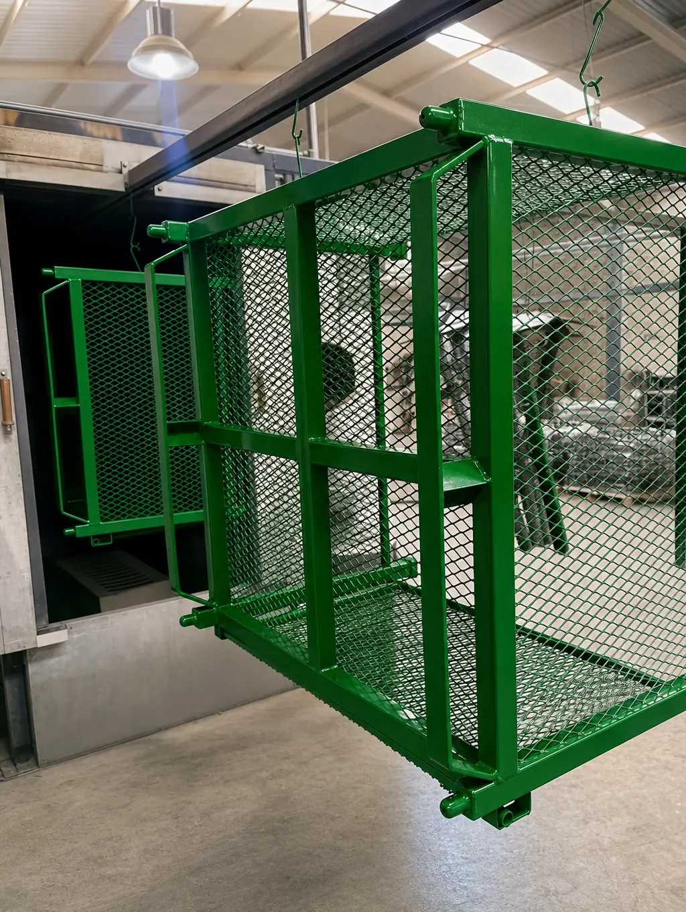

Las ventajas y desventajas de la pintura electrostática se resumen así: logra un acabado resistente, uniforme y sin solventes en piezas metálicas, pero necesita horno, cubre mal las cavidades profundas y complica los retoques. Para la mayoría de las piezas metálicas de manufactura, el balance es favorable.
Pocas guías hablan de lo que la pintura en polvo no hace bien. Nosotros preferimos contarlo, porque un proveedor que solo cuenta las ventajas te deja descubrir las limitaciones con tu pieza ya pintada.
En Steel Paint maquilamos pintura en polvo todos los días, así que hablamos desde lo que vemos en piezas reales. Si apenas empiezas con el tema, revisa antes qué es la pintura electrostática y cómo funciona.
Ventajas de la pintura electrostática
Resistencia y durabilidad
Una vez curada, la película es dura y resiste bien el rayado, los golpes menores y el desgaste por manipulación. En piezas que se tocan todos los días, eso significa menos retoques. La duración final depende, eso sí, del polvo elegido y de la preparación del metal.
Cobertura pareja en bordes y esquinas
La carga eléctrica atrae el polvo hacia toda la pieza, incluidos los bordes, donde otras pinturas tienden a adelgazarse. Es una de las razones por las que el polvo protege mejor perfiles, rejillas y piezas con relieves.
Sin solventes y con menos desperdicio
El polvo es seco: no usa disolventes en la aplicación y el excedente que no se adhiere puede recuperarse. Eso simplifica el cumplimiento ambiental y aprovecha mejor el material que una pintura líquida. Lo comparamos con detalle en pintura en polvo vs pintura líquida.
Acabado uniforme y repetible
Color, brillo y textura pueden mantenerse consistentes de un lote a otro, algo clave cuando tus piezas se ensamblan con otras. Hay mucha variedad, como se ve en los tipos de acabados en pintura electrostática.
Proceso ágil para producción en serie
Al salir del horno la pieza ya está curada y lista para manejarse, sin tiempos largos de secado. Eso facilita integrar el pintado al flujo de producción.
Desventajas reales de la pintura electrostática
Estas son las limitaciones que más pesan en la práctica:
- Necesita horno: el calor es parte del proceso, así que no sirve para materiales o ensambles que no toleran la temperatura de curado
- Cavidades profundas: el campo eléctrico no llega bien al fondo de huecos y esquinas cerradas (efecto jaula de Faraday), y puede quedar sin cubrir
- Cambios de color: cada cambio exige limpiar la cabina, por lo que los lotes muy chicos con muchos colores tienen más tiempo muerto
- Espesor de película: suele ser mayor que el de otras pinturas, algo a considerar en roscas, ajustes y piezas con tolerancias cerradas
- Retoques difíciles: reparar un rayón sin que se note es más complicado que en pintura líquida; muchas veces lo confiable es repintar la pieza completa
- Tamaño de la pieza: la pieza debe caber en la línea y en el horno; confirma sus dimensiones con tu maquilador desde la cotización
- Dependencia de la preparación: sobre un metal sucio u oxidado el acabado falla, sin importar qué tan bueno sea el polvo. Lo explicamos en preparación de superficie para powder coating
Si piensas instalar tu propio equipo, suma además la inversión, el espacio y la operación; lo desarrollamos en línea de pintura electrostática: instalar o maquilar.
Qué pesa más según tu tipo de pieza
Las mismas características pesan distinto según el sector. En autopartes y metalmecánica, la repetibilidad y la resistencia al desgaste suelen ser lo decisivo, como vemos en la industria automotriz de Monterrey.
En mueble metálico y herrería, importan el aspecto y la resistencia al uso, y el exterior exige un polvo formulado para intemperie, como explicamos en la guía de muebles metálicos de exterior. En piezas con roscas, ajustes o cavidades profundas, las desventajas pesan más y conviene revisar el caso antes de cotizar.
Y si dudas entre pintar o galvanizar, el análisis de cada alternativa está en la comparativa de recubrimiento en polvo vs galvanizado, y si ya tienes piezas galvanizadas, en pintura electrostática sobre galvanizado.
Resumen: a favor y en contra por criterio
| Criterio | A favor | En contra |
|---|---|---|
| Resistencia | Película dura al rayado | Un golpe fuerte expone el metal |
| Cobertura | Buena en bordes | Débil en cavidades profundas |
| Ambiente | Sin solventes | Requiere horno |
| Producción | Ágil en serie | Cambio de color toma tiempo |
| Acabado | Uniforme y repetible | Retoque difícil |
| Espesor | Película robusta | Cuidar tolerancias |
Cómo reducir las desventajas desde el diseño y la especificación
Varias limitaciones se pueden atenuar si se consideran antes de fabricar o cotizar:
- Cavidades: diseña aberturas o define con tu maquilador qué zonas interiores pueden quedar con menos cobertura
- Roscas y ajustes: indica qué áreas deben protegerse con tapones o enmascarado para que el espesor no interfiera.
- Colores: agrupa los pedidos por color para reducir los cambios de cabina y los tiempos muertos.
- Calor: si tu pieza lleva plásticos, hules o electrónica, píntala antes de ensamblar esos componentes.
- Retoques: define desde el inicio si una reparación será local o si se repintará la pieza completa.
Ejemplos: cuándo las desventajas sí cambian la decisión
Un soporte de acero fabricado en serie es el caso donde las ventajas dominan: cabe en el horno, se cubre bien y el acabado se repite en cada lote. Aquí las desventajas casi no pesan.
En cambio, un ensamble que ya trae cableado o piezas plásticas no tolera el curado. Lo habitual es pintar las piezas metálicas por separado y ensamblar después, o evaluar otro sistema para esa pieza.
Una pieza de precisión con roscas finas y ajustes cerrados pide cuidado con el espesor, y una estructura muy grande exige confirmar con el maquilador que cabe en su línea y en su horno. En ambos casos el polvo sigue siendo posible, pero la revisión previa deja de ser opcional.
Qué preguntarle a tu maquilador sobre estas limitaciones
- ¿Mi pieza cabe en la línea y en el horno, y cómo se va a colgar?
- ¿Qué zonas pueden quedar con menos cobertura y cuáles son críticas?
- ¿Cómo se protegen roscas, ajustes y superficies de contacto?
- ¿Qué pasa si tengo que retocar una pieza ya pintada?
- ¿Cómo se manejan los cambios de color si mis lotes son pequeños?
Las respuestas te dicen mucho sobre el proveedor: uno que conoce su proceso contesta con precisión, y uno que solo vende ventajas tiende a evadir los puntos débiles.
Tres ideas que conviene corregir
- "La pintura electrostática dura para siempre": dura mucho si el metal se preparó bien y el polvo es el adecuado, pero no es indestructible.
- "Sirve para cualquier material": el proceso está pensado para metal; otros materiales son casos aparte.
- "Un color es igual en cualquier lote": el tono depende del fabricante y del código del polvo, y se valida con una referencia física.
Preguntas frecuentes sobre ventajas y desventajas de la pintura electrostática
¿Cuáles son las ventajas de la pintura electrostática?
Las principales son un acabado resistente al rayado y al desgaste, buena cobertura de bordes, cero solventes en la aplicación, aprovechamiento del polvo que no se adhiere y un acabado uniforme y repetible entre lotes.
¿Cuáles son las desventajas de la pintura electrostática?
Requiere horno, por lo que no sirve para materiales que no toleran el calor; las cavidades profundas son difíciles de cubrir; el cambio de color toma tiempo; y los retoques son más complicados que con pintura líquida.
¿Se puede aplicar pintura electrostática en plástico o madera?
La pintura en polvo convencional se aplica sobre metal. Existen formulaciones y procesos especiales para otros materiales, pero son un caso aparte y deben consultarse con el fabricante del polvo.
¿La pintura electrostática es más resistente que la pintura líquida?
Para piezas metálicas, el polvo curado suele ofrecer una película más resistente al rayado y al desgaste. Aun así, la resistencia final depende de la preparación del metal y de la resina elegida.
¿La pintura electrostática sirve para exterior?
Sí, si se usa un polvo formulado para intemperie y el metal está bien preparado. La resina define cuánto resiste al sol, por lo que conviene revisar la ficha técnica del polvo.
Cómo pesar el balance antes de decidir
Ninguna tecnología de acabado gana en todo. Para decidir, ordena tus criterios: primero si la pieza tolera el horno, luego su geometría y tolerancias, después la exposición en uso y por último el costo total. Si el polvo cumple los primeros tres, sus ventajas suelen inclinar la balanza; si falla en alguno, vale la pena evaluar otra solución.